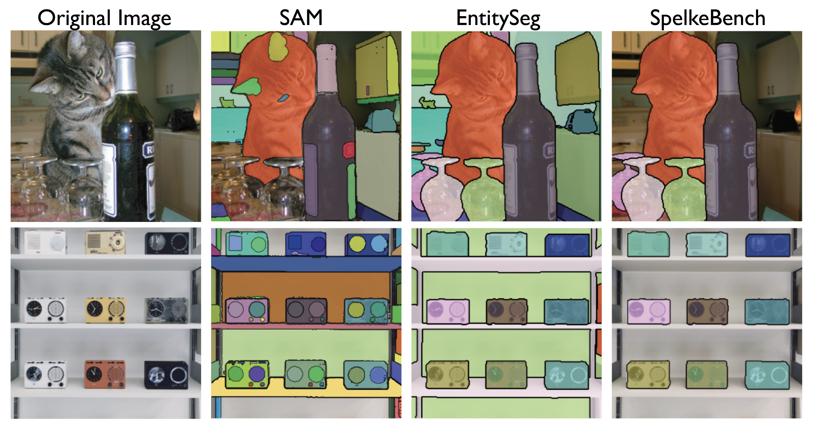

Overview of SpelkeNet's Capabilities.
On the left, our model first predicts a probability of motion map, indicating regions likely to undergo movement.
We sample a point from this map and apply a virtual poke.
Conditioned on this intervention, our model completes the flow field, revealing object boundaries from which we extract a segment corresponding to an entity that would move together when acted on by physical forces.
On the right, we illustrate how these discovered segments can be used in a physical object editing pipeline,
ensuring that edits are applied to groups of pixels that would move together in the real world, enabling more physically plausible object manipulation.
A Better Definition of Segmentation for Physical Manipulation
Conventional definitions of segmentation are not aligned with physical manipulation tasks.
This can be seen in existing segmentation datasets like COCO and ADE20K, which define segments through semantic labels (e.g. car, tree, sky).
While useful, these categories fail to capture how objects actually move or interact physically, overlooking the critical properties that determine how segments respond to applied forces.
We thus introduce the notion of Spelke objects—groupings of physical things that reliably move together when acted on by physical forces.
Spelke segments address this limitation by identifying groupings of pixels that respond together to forces, offering more natural alignment with physical manipulation tasks.
Grounding the definition of segments in co-movement of pixels rather than semantic categories paves the way for a more practical, physically grounded understanding of the scene,
which is essential for common robotics tasks like grasping, pushing, and object manipulation.
Benchmarking Spelke-aligned Segmentation
To systematically evaluate segmentation algorithms against Spelke principles, we introduce SpelkeBench—a 500-image dataset that measures how well model outputs align with motion-defined object boundaries rather than semantic categories.
We curate the dataset from two complementary sources: EntitySeg, featuring high-resolution internet imagery with dense segmentation annotations, and Open X-Embodiment, consisting of real-world egocentric robot interactions. This contrast enables evaluation across both curated image domains and physically grounded robotics environments.

Existing segmentation approaches like SAM and EntitySeg frequently produce segments that diverge significantly from Spelke criteria (e.g. camera subcomponents and immovable walls),
This is apparent when examining the segments above produced by SAM/EntitysSeg—these segments do not represent units that we would intuit move together as a whole, demonstrating that current segmentation methods fail to capture the notion of Spelke segments.
Operationalizing Spelke segmentation
Local Random Access Sequence Modeling (LRAS)
LRAS is a sequence model inspired by large language models that causally predicts locally quantized image (RGB) and optical flow patches. The LRAS model operates on a unified vocabulary comprising RGB and flow "content" tokens and "pointer" tokens for each modality that specify spatial locations in the image grid.
This vocabulary can be partitioned into four disjoint sets: RGB pointer tokens ùìò(rgb), RGB content tokens ùìß, flow pointer tokens ùìò(flow), and flow content tokens ùìï.
The key innovation lies in LRAS's sequence design: each content token is paired with a corresponding pointer token specifying its spatial location, enabling sequences to be arranged in arbitrary spatial order while allowing pointer tokens to serve as modality-specific queries. This flexible, composable architecture makes LRAS particularly well-suited for discovering pixel co-movement through virtual interventions. Unlike diffusion models requiring dense global conditioning, LRAS supports sparse, localized conditioning—enabling us to inject virtual "pokes" by simply appending a flow token representing desired motion paired with a pointer token indicating spatial location.
Building on this foundation, we introduce SpelkeNet, an instance of LRAS specifically designed for Spelke object discovery through strategic sequence design that reveals which pixels move together as cohesive units under applied forces.
LRAS Architecture. SpelkeNet tokenizes images and flow fields into spatially-indexed sequences, outputs categorical distributions over flow tokens.
Sampling from these distributions yields a complete flow field in pixel space that we use for discovering segments.
Motion Affordance Maps
To discover Spelke objects, we must first identify candidate locations where virtual pokes can be applied—pixels lying on regions likely to move under external forces. We refer to this as the probability of motion affordance map, denoted pmotion. Such motion-centric affordance maps prove especially valuable in robotics applications for identifying high-motion regions that respond to interaction (e.g., cups or plates)
To compute pmotion, we define a set of flow tokens corresponding to motionpanel we show that sampling from these distributions yields a complete flow field in pixel
space that we use for discovering co-moving entities/segments. greater than threshold τ, then sum their estimated probabilities. As flow tokens are not directly interpretable, we map each flow token to a 2D flow vector through epigraphy on the flow vocabulary—statistically aggregating typical input flow fields that produced each token. Given RGB tokens concatenated with zero camera motion to discount camera effects, we obtain predicted flow distributions and compute motion probability at each spatial location by summing over tokens representing significant motion. This yields a 2D heatmap of regions likely to move under external forces, as illustrated below.
1 / 8
Motion Affordance Maps. Here we illustrate input images and their corresponding
probability of motion heatmaps showing regions likely to exhibit motion under externally applied forces
Expected Displacement Maps
Having identified regions of high motion-affordance, we leverage LRAS's sequential design to apply virtual pokes at candidate locations. We obtain the "expected displacement map"—an estimate of likely flow at each location conditioned on a virtual poke. This map provides valuable guidance about how objects might move before physical contact occurs, which can prove especially useful in robotics settings for predicting interaction outcomes.
Specifically, Our approach exploits LRAS's flexible sequence composition by constructing input sequences that include virtual pokes. We represent a poke as a flow token fk at location ik, appending this poke to our base sequence: z = x ⊕ [c=0] ⊕ [(ik, fk)]. The model then predicts how this localized intervention propagates throughout the scene. We compute expected displacement as the probability-weighted average of flow vectors, where each vector maps to flow tokens. This yields a dense 2D vector field revealing how the entire scene would respond to the applied poke, effectively discovering which pixels move together as cohesive units.
1 / 5
Expected Displacement Maps. Vector fields showing predicted motion propagation throughout the scene from virtual poke points
Spelke Object Discovery Algorithm
Building on the previously discussed structures, we now combine these components to discover Spelke objects through systematic "virtual pokes". Specifically, our approach leverages the sequential design of SpelkeNet to perform counterfactual probing.
We first sample a location k with high motion probability (pmotion(k) > τp), then apply virtual pokes in diverse directions {f(r)} at this location. For each poke direction, we compute the expected displacement field. To identify pixels that move in coordination with the poke, we average the dot product between each poke vector and the expected motion across all interventions. This statistical aggregation reveals regions that consistently respond together regardless of poke direction—the hallmark of Spelke objects. Finally, Otsu thresholding extracts our desired Spelke segment, completing the discovery process from motion affordance identification through counterfactual probing to object extraction.
1 / 3
Spelke Object Discovery Algorithm.
Multiple virtual pokes are applied at locations sampled from the pmotion map. As shown, this approach can discover multiple objects within a scene and produces more meaningful segments that align with Spelke objects as compared to the SAM segments.
SAM
DINOv1-B/8
DINOv2-L/14
DINOv2-G/14
CWM
SpelkeNet
AR
0.4816
0.2708
0.2524
0.2254
0.3271
0.5411
mIoU
0.6225
0.4990
0.4931
0.4553
0.4807
0.6811
Quantitative evaluation of point-prompted segmentation accuracy across models: We report Average Recall (AR) and mean Intersection over Union (mIoU) for various segmentation methods. LRAS-Seg significantly outperforms both self-supervised baselines (DINO, CWM) and the supervised SAM2 model
Using Spelke segments for Physically Plausible Object Manipulation
Segmentation plays a crucial role in object-centric scene editing, where users click on objects and provide edit prompts for 2D or 3D transformations.
The segmentation model generates edit masks from these point selections, making mask quality critical for realistic results. For physically plausible scene edits, masks must reflect genuinely movable entities rather than arbitrary visual boundaries.
As such, Spelke segments prove particularly valuable for this application, yielding more realistic scene edits as we demonstrate in our experiments with SpelkeNet.
1 / 3
Comparison of SpelkeNet and SAM for Object Manipulation.
From single-point segmentation prompt, the generated segment is used as input to an object manipulation model along with a 3D edit prompt (e.g. rotation, translation).
We show that SpelkeNet segments enable more physically plausible object editing by respecting physical boundaries as opposed to existing segmentation methods like SAM, which often often split up or combine objects in ways that are inconsistent with how they move.
Method
Segment
MSE ↓
PSNR ↑
LPIPS ↓
SSIM ↑
EA ↑
LRAS
Spelke
0.009
21.64
0.213
0.698
0.776
SAM
0.013
20.17
0.255
0.685
0.633
LightningDrag
Ours
0.017
19.16
0.195
0.672
0.679
SAM
0.020
18.18
0.241
0.658
0.536
Diffusion Handles
Ours
0.024
17.42
0.364
0.555
0.576
SAM
0.031
16.15
0.419
0.526
0.495
DiffusionAsShader
Ours
0.015
19.29
0.194
0.707
0.640
SAM
0.019
18.20
0.253
0.682
0.503
Quantitative evaluation of edit quality across segmentation methods and editing pipelines. We report results for edits generated using SAM versus SpelkeNet segments across four editing models. Lower ↓ is better, higher ↑ is better.
Emergent Properties of SpelkeNet
Beyond discovering object boundaries, SpelkeNet exhibits emergent properties that demonstrate a deeper understanding of physical scene structure.
The generated probability of motion maps can be used to infer physical attributes such as rigidity or material type.
Rigid objects like laptops and cardboard boxes tend to exhibit a
uniform probability across the segment, while deformable objects such as cloth and plastic covers
often show more localized motion responses near the poke point.
When applying a "virtual poke" to an object within a stack (e.g. the bottom book), the extracted Spelke segment includes both the directly contacted object and all the objects it physically supports, implying an understanding of support hierarchies within a scene.
BibTeX
@misc{venkatesh2025discoveringandusingsegments,
title = {Discovering and using Spelke segments},
author = {Rahul Venkatesh and Klemen Kotar and Lilian Naing Chen and Seoungwoo Kim and Luca Thomas Wheeler and Jared Watrous and Ashley Xu and Gia Ancone and Wanhee Lee and Honglin Chen and Daniel Bear and Stefan Stojanov and Daniel Yamins},
year = {2025},
eprint = {TODO},
archivePrefix = {arXiv},
primaryClass = {cs.CV},
url = {TODO},
}